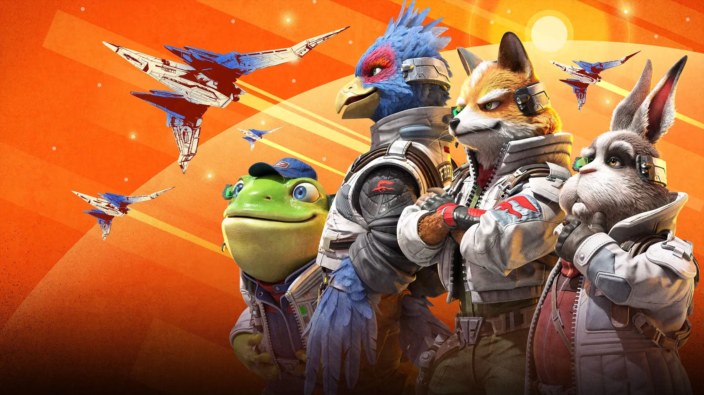

Star Fox (2026) is the project I contributed to while working as an Associate Technical Artist at Velan Studios!
Due to my NDA, I cannot discuss individual details publicly, however, if you are a recruiter, we can discuss details as needed privately. Contact me if there is a role that would fit my type of work and I would love to talk Star Fox if it gets to that point!